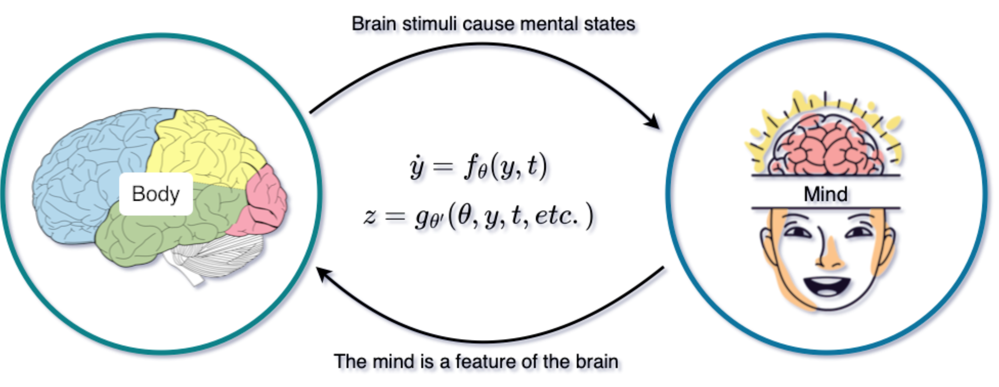

I’ve always been fascinated by the theory of the mind, and how to fully replicate it. But lately I’ve found the pholosiphical nature of the question more and more frustrating. The following article is based on ideas I collected from Malcolm Gladwell’s book Blink, and John Searle’s course on the Philosophy of Mind. Hoping not to get into too much detail, I’ll talk about a few technologies: Parallel Computing, and Neural Differential Equations.
The Mind-Body problem
The Cartesian theory postulates that there are two realms: a real of mind, and a real of body. The mind commands the body (which is only there for the ride). This is Rene Descarte’s legacy, whose remants we carry to this day.
This formulation dating back to the 1600s is convenient for it’s time, as it leaves the Realm of the Body to the science, and the Realm of the Mind to the church. Perfect if you’re a scientist wanting to conduct your research under the inquisitions.
Finger pointing appart, this teory is appealing. But it leaves us with one big problem. How does the mind influence the brain ? How are the two realms connected ? Descarte’s answer to this puzzled was unconvinding.
Over the centuries, several school of thoughts have emerged only considering one of the thoughts. The main groups being idealism and behaviourism. It would appear that the advent of computers and the emergence of the cross-disciplinary field of congnitive science is the key to this puzzle.
The causal brain
When you feel good pain, hunger, or joy, there’s no doubt that these are neuro-biological processes in your brain firing. This suggest that the mint reacts to the behaviour of the world, it is caused by the brain processes.
On the other hand, when you go from being unhappy to being extatic, we can clearly see a change in the physical disposition of your brain. In other words, your mind is a state of your brain, a feature.
As explained by John Searle, the brain causes the mind, and the brain is a feature of the mind. This would appear paradoxal, but no. It makes sense if we think of the mind as made up of the higher-level processes than what we measure in the brain.
Doesn’t this causality principle remind you of something(s) specific ? Differential equations and Neural Networks. Therefore, we liken the causality and evolutionary nature of the brain to ordinaty differential equations (ODE). Wereas we ascribe the compositionality of it to Deep Neural Networks.
As it turns out, those two concepts have been merged in what is now known as Neural ODEs, typically formulated as follows: \[\begin{align} \frac{\text{d} y}{\text{d} t}(t) &= f_{\theta}(y,t), \qquad t \in ]t_0, t_f [ \\ y(t_0) &= y_0, \\ z(t) &= g_{\theta'}(\theta, y, y_0, t, t_0, t_f), \end{align}\] where \(y\) represents the physical state in which the brain is in. The transformative function \(f_{\theta}\) – where the learnable parameters \(\theta\) indicte a Deep Neural Network – dictates how a physical signal is processed inside the brain. The misterious readout function \(g_{\theta'}\) tells us how a brain signal \(y_0\in \mathbb{R}^b\) turns into a global mind feature \(z \in \mathbb{R}^m\) (with potentially lots more parameters).

That’s not all. Tipicall neural networks today can grow to extremely large size: billions of parameters in the weights \(\theta\). What if this neural network doesn’t have a fixed structure? What if the neurons could dynamically adapt to the task at hand? This is the rapidly growing notions of Liquid Neural Networks inspired by the efficiency of the worm’s brain made up of mearly 300 neurons.
The Neural ODE paradigm has found breathtaking success, particularly againts ResNets [REF]. The Liquid Neural Network on the other hand has shown jaw-dropping perforamnce in autonomous driving [REF MIT]. I believe those two could be combined within the Liquid Neural ODE, unlocking the secrets of conciousness.
A parallel theory
As a full-on daydreamer, I also believe any theory of the mind must account for the subconcious. Although not necessarily as decribed by Freud [REF] as I don’t believe those deeply abstract ideas are indispensable to replicating the human mind.
This is why I think there’s a second computer at work in the background of our minds, even when we are awake. The same computer that quickly processes information and let’s us avoid a car in an emergency situation. The kind of computer that shows us how we’re all carrying implict biases [REFs]. the same one we make use of on first impressions. The one professionals use to identify talent.
If those ideas sound familiar, that’s because the’re copied from Malcolm Gladwell’s betselling book Blink. He calls it thin slicing. A computer that, given sufficient experience in a domain, discards all unecassy information to make the quickest decisions critical for our survival. More often than none, the good one. The moral of the book is, listen to your inner voice, and know when to ignore it.
So how can this idea complement the Neural ODE (which represent our full mind in this analogy). Well, we parallelise it. The function \(f\), given a smaller input vector \(y\) and smaller weights \(\theta\), should return faster results at competitive accuracy. What I’m describing is combined data- and time-parallastion. We solve the Neural ODE on a fine data-time domain, and we make sure it’s inference on a coarser data-time domain is just as accurate.
Several works have investigated this idea on Neural ODE, namely Gunther [REF MULTIGRID IN TIME], Massaroli [REF DIFF LAYERS]. However, they only considered time (or layer) parallelism. Moreover, they focus on the training, rather than inference. Combinng at data and time for quick inference is a dream I hope to achieve before then end of my PhD (2025).
Closing toughts
I’m currently investigating the feasablity of a data-time parallel Neural ODE in my PhD research. How would we test such an idea on the brain? I have no clue yet. All I know is that I can only start with my brain, as with the famous Chinese Room argument.
If your mind finds itself drawn to these ideas, then maybe they’re true (As Searle says, always test the theory on yourself first). In that case, send me a massage. If you’ve heard these same ideas somewhere else before and think I’m wasting my time, then please do send me a message. If this sounds like complete bullshit to you, that’s because maybe it is. It shouldn’t stop you from sending a kind message.